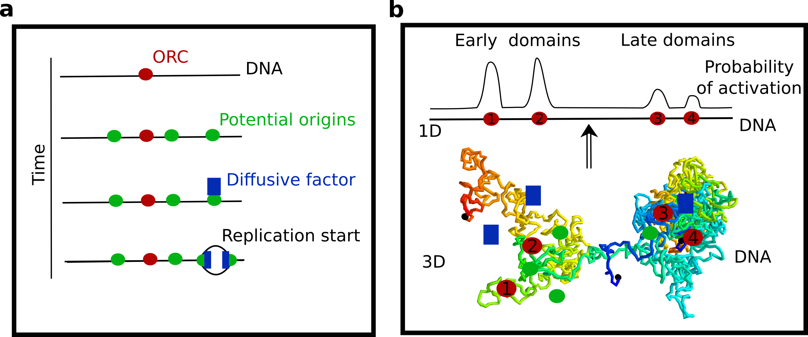

DNA replication (Work in progress)
Illustration 1: a) Schematic representation of the different steps of the replication. At different positions on the genome, ORC proteins are loaded. These proteins allow to load on the genome MCM complexes that we will call potential origins. In the presence of a limiting diffusive factor, some of these potential origins are activated. Then two replication forks are created and the DNA sequence is replicated on both directions. b) Early and late replicating domains can be explained by an effective one-dimensional potential. Can this potential emerge from the domains created by higher order structures adopted by the chromatin?